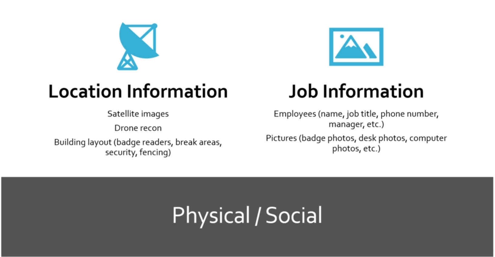

Reconnaissance stands for information Gathering of the target
Its of 2 types namely
Active Reconnaissance
&
Passive Reconnaissance
Types of Passive Recon

Visit
Bugcrowd.com
to check the bugbounty programs